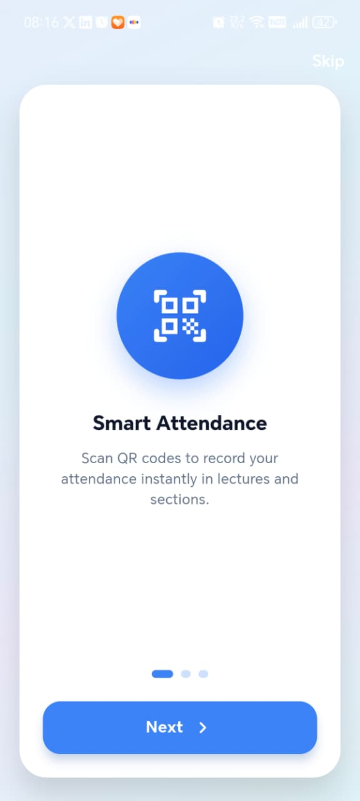

Basic Data Maintenance
Admin CRUD for students, faculty, T.A.s, courses, departments, and academic schedules across 19 relational tables.
ClassTrack - A Mobile System for Student Performance Monitoring & QR-Based Attendance
ClassTrack is an end-to-end mobile platform designed for Egyptian universities. It replaces paper roll-calls with cryptographically expiring QR tokens verified by facial recognition, unifies grades and attendance in one secure database, and applies predictive analytics to flag at-risk students weeks before the midterm - giving faculty time to intervene when it still matters.
ClassTrack addresses a structural gap in Egyptian higher education: academic monitoring remains manual, fragmented, and reactive. Faculty lose hours to roll-call each semester; attendance records are vulnerable to proxy signing; and struggling students are typically identified only after the midterm - when corrective action is least effective.
Our solution integrates three capabilities into a single mobile system: QR-based attendance secured by time-limited tokens and biometric verification; unified performance tracking across assignments, quizzes, practicals, and exams; and an AI-driven early-warning engine that estimates final grades from partial data and surfaces at-risk students from Week 3 onward.
The system was developed following OOAD methodology at MTI University (Modern University for Technology and Information), validated through 47 system test cases, and pilot-tested live during File Organization & Processing practical sections with Level 2 students - receiving highly positive feedback from students and teaching assistants.
Admin CRUD for students, faculty, T.A.s, courses, departments, and academic schedules across 19 relational tables.
QR attendance with face verification, grade entry, enrollment processing, section assignment, and manual overrides.
Role-based search and filter for attendance records, grade reports, performance summaries, and exportable analytics.
YOLOv8 + FaceNet-512 face pipeline and Linear Regression grade prediction with low/moderate/high risk bands.
Real-time integrated tracking of attendance, assignments, quizzes, and midterms in one dashboard.
Risk-band classification from Week 3 - five weeks before the midterm review.
Forward-looking predicted grade for each student alongside current standing.
Attendance-performance correlation at student, course, and institutional levels.
Interactive dashboards plus exportable PDF and Excel reports.
10-second HMAC QR tokens with FaceNet-512 - FAR below 0.1%.
Structured entry and validated Excel/CSV import reduces transcription errors.
Full offline functionality with automatic sync - 100% queue recovery verified.
Role-based access with Supabase RLS and audit logs for all sensitive actions.
Can QR + facial recognition achieve TAR above 90% with fraud-resistant attendance in large Egyptian lectures?
Can Linear Regression identify at-risk students in Weeks 3-4, before the Week 8 midterm?
Does Flutter + SQLite provide sufficient reliability when network uptime averages ~89% during peak hours?
Student performance is assessed after outcomes are already determined. The data needed for early intervention is either missing, unreliable, or scattered across disconnected systems - leaving faculty without the tools to act in time.
Manual roll-call consumes 12-15 minutes per session - six to eight hours of instruction lost per course, per semester.
Paper sign-in sheets and unverified QR scans are easy to game, which makes attendance data unfit to feed any prediction.
Grades, quizzes, assignments and attendance live in separate systems - the Registrar, paper logs, personal spreadsheets.
Struggling students are typically identified around Week 8, after the midterm - past the point where intervention works best.
ClassTrack is not a single-purpose attendance tool. It is a full-stack academic operations platform built for the realities of Egyptian lecture halls: unreliable connectivity, large cohorts, and the need for verifiable data.
Faculty generate session-specific QR codes that refresh every 10 seconds, preventing screenshot sharing and replay attacks between students.
Every scan triggers YOLOv8 face detection and FaceNet-512 embedding comparison - 94.3% true acceptance with zero false accepts in impostor testing.
Linear Regression model (R² = 0.847) estimates final course grades from partial inputs, enabling proactive faculty outreach from Week 3. View model
Structured entry for assignments, quizzes, practicals, and exams - plus validated Excel bulk import to eliminate duplicate manual entry.
Attendance scans and grade writes queue locally in encrypted SQLite during network outages and sync automatically on reconnect - 100% recovery verified.
Supabase Row-Level Security enforces strict data boundaries across students, faculty, teaching assistants, and administrators - zero cross-role leaks in testing.
ClassTrack delivers all features defined in the graduation project document - from smart attendance to institutional admin tools.
Real-time student performance views with GPA, history, and course analytics.
AnalyticsRich reporting with lecture/section attendance and grade statistics.
ReportsConsistent academic records across departments, courses, and enrollments.
AdminTimely alerts for attendance, grades, and at-risk status changes.
Alerts10-second rotating tokens with cryptographic session binding.
SecuritySMILE, BLINK, and head-turn challenges block photo replay attacks.
BiometricsMidterm, quizzes, assignments, labs, mini projects, and final grades.
GradesValidated bulk grade upload eliminates duplicate manual entry.
ImportFaculty override for valid excuses with full audit trail.
OverrideRole-based filters by student ID, course, date, week, and semester.
SearchWith Lab, Without Lab, and Doctor-Defined adaptive formulas.
GradingSyncfusion PDF and Excel packages for institutional reporting.
ExportThree role-based walkthroughs from the live ClassTrack app: 39 student and 65 faculty & T.A. mobile screens, plus 24 admin desktop portal screens. Select a role, then use Previous / Next, Auto-play tour, or arrow keys ← →.
Onboarding introduces QR-based attendance - students scan codes to record presence instantly in lectures and sections.

Each workflow is documented in the project specification with step-by-step algorithms - from login to offline sync.
Every attendance record on ClassTrack is the product of a token that expires, a face that's verified, and a database that never blocks on a missing connection.
A session-specific token is created and refreshed every 10 seconds.
The app reads the live token before it can be reused or shared.
YOLOv8 detects the face; FaceNet-512 confirms identity in ~190ms.
Writes go to Supabase, or queue locally in SQLite if offline.
Attendance feeds the prediction model on the faculty dashboard.
Students, faculty, teaching assistants and administrators each get a purpose-built view over the same secured data layer.
Single codebase for Android & iOS. Offline-first: scanning, grading and dashboards keep working without a connection.
19 relational tables, Row-Level Security and real-time sync enforce role-based access per user type.
A decoupled Python microservice runs the face-recognition and grade-prediction models, callable independently.
An encrypted offline queue captures every write during an outage and replays it automatically on reconnect.
Each role accesses only the data and actions relevant to their responsibilities - enforced at the database layer, not just the UI.
Every layer of ClassTrack uses industry-standard frameworks documented in the project implementation chapter.
Unlike prior QR-only or analytics-only systems, ClassTrack combines performance monitoring, offline attendance, and AI in one platform.
| Feature | Typical QR Apps | Analytics Dashboards | ClassTrack |
|---|---|---|---|
| Student performance monitoring | No | Yes | Yes |
| QR attendance | Static QR | No | 10s rotating + HMAC |
| Face / biometric anti-fraud | No | No | YOLOv8 + FaceNet |
| Offline support | No | No | Encrypted SQLite sync |
| AI early warning | No | Black-box ML | Linear Regression (auditable) |
| PDF / Excel reports | Limited | Yes | Full export |
| Role-based access (4 roles) | Partial | Web only | Student / T.A. / Faculty / Admin |
A face is converted to a 512-number fingerprint and compared by distance, not by photo - robust to lighting, angle and expression.
True Acceptance Rate across test environments
YOLOv8-Face locates the face in the frame and crops it with a safety margin.
CLAHE equalizes lighting before the crop is standardized to 160×160.
FaceNet-512 outputs a 512-dimensional embedding, pretrained on 3M images.
Euclidean distance below 0.70 against the stored database confirms identity; above it, the scan is rejected.
A transparent Linear Regression model was chosen deliberately over black-box alternatives. Three grading modes adapt to course type: With Lab, Without Lab, and Doctor-Defined. Dual deployment on Flutter (offline) and Flask API delivers identical predictions.
Inputs: Attendance (10), Assignments (5), Quizzes (5), Practical (10), Midterm (20) → Predicted final exam + letter grade. Midterm contributes ~40% as strongest predictor.
Beyond unit and integration testing, ClassTrack underwent rigorous security auditing and a live UAT pilot during File Organization & Processing practical sections at MTI - supervised by Prof. Dr. Hanafy Mahmoud Ismail with T.A. Gina Hamdy and assistants. Every enrolled student scanned, passed face verification, and had attendance recorded in under the time of a manual roll-call.
| Type | What Was Tested | Result |
|---|---|---|
| Unit Testing | 47 tests, 83.2% code coverage | PASS |
| Integration | App ↔ Supabase, App ↔ Flask, offline sync | PASS |
| System Testing | 47 test cases, 4 defects found & fixed | PASS |
| Performance | QR scan + face verify, 40 concurrent users | PASS |
| Security | QR replay, cross-role access, impostor attempts | Zero attacks |
| AI Evaluation | Face recognition + grade prediction validation | TAR 94.3% |
Correct credentials route user to role-specific dashboard.
Malformed input rejected with generic error message.
Parameterized queries block injection attempts.
Form validation prevents blank submissions.
Scan rejected if student not in lecture/section.
Second scan in same session blocked with user message.
End-to-end latency measured across QR scan, face verification, dashboard load, report generation, and offline sync.
| Performance Scenario | Users | Avg (ms) | Status |
|---|---|---|---|
| QR scan + face verify (end-to-end) | 100 | 389 | PASS |
| Student dashboard load | 1 | 143 | PASS |
| PDF report (50-student course) | 10 | 2341 | PASS |
| Offline sync (100 queued records) | 1 | 4123 | PASS |
| Face recognition (30 simultaneous) | 30 | 445 | PASS |
Acknowledged transparently in the thesis - these define the ceiling and guide future development.
TAR drops to 82.1% below 20 lux vs 97.1% in normal lighting. CLAHE mitigates but IR camera support is planned.
R² = 0.847 leaves 15.3% variance from non-academic factors (mental health, employment) that academic data cannot capture.
Model trained on MTI grading structure. Other institutions require re-enrollment of embeddings and retraining.
From graduation project to Egypt's primary academic monitoring platform - organized into Phase 1 (12 months) and Phase 2 (12-24 months).
Eight developers from MTI University, building ClassTrack as their graduation project under academic supervision.
Hossam Khaled Bahnasy
Malak Magdy Zahran
Ahmed Gaber Abd El-Gawad
Hazem Mohamed Labib

Eslam Ahmed Elsayed

Ahmed Awad Hamed

Abd El-Rahman Ayman Khairy
Ahmed Ehab Raouf
Supervised by Prof. Dr. Hanafy Mahmoud Ismail - with T.A. Gina Hamdy, T.A. Nayra Mostafa, T.A. Bassant Ehab, T.A. Shahd Mostafa, and T.A. Esraa Salah
Install ClassTrack on Android or read the complete thesis - Student Performance Monitoring & QR-Based Attendance (final version, June 2026).
Download the APK and install on Android. Enable Install from unknown sources if prompted, then open the app and sign in with your university credentials.
Full project documentation: requirements, architecture, AI engine, testing results, app screenshots (Chapter 5), and future roadmap - MTI University, 2025/2026.
If you would like to buy the platform or try the system on your campus, contact our team to discuss licensing, deployment, customization, and a live demo for your faculty and administrators.
hosamdyabb@gmail.comClassTrack - A Mobile System for Student Performance Monitoring & QR-Based Attendance - is a working, pilot-tested platform aligned with Egypt's digital-transformation goals in higher education. We welcome the opportunity to present our findings and discuss institutional adoption. For licensing or campus pilots, email hosamdyabb@gmail.com.